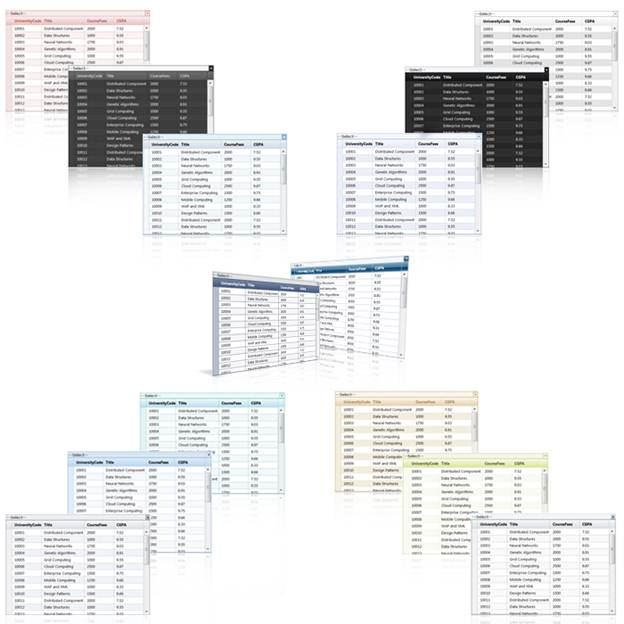

The MultiColumnDropDown control supports fourteen professional built-in skins. These skins can be applied to the drop-down column to enhance the look and feel of the control.
· Office 2007Blue
· Office 2007Black
· Office 2007Silver
· Vista
· Almond
· Blend
· Blueberry
· Marble
· Midnight
· Monochrome
· Olive
· Sandune
· Turquoise

Figure 305: MultiColumnDropDown Control Skins
Use Case Scenarios
The built-in skins provide users a very easy way to specify a visual style for the control (by setting just a single property) that suits their application requirements.
Property
|
Property |
Description |
Type |
Type of the property |
Value it accepts |
Any other dependencies/sub-properties associated |
|
AutoFormat |
Used to apply auto format by using Skins enumeration. The default value is Office2007Blue. |
ServerSide |
Enum |
Skins.Office2007Blue Skins.Office2007Black Skins.Office2007Silver Skins.Vista Skins.Almond Skins.Blend Skins.Blueberry Skins.Marble Skins.Midnight Skins.Monochrome Skins.Olive Skins.Sandune Skins.Turquoise Skins.VS2010 |
NA |
Methods
|
Method |
Arguments |
Return type |
Description |
|
AutoFormat (Skins) |
Skins |
IMultiColumnDropDownBuilder
|
Used to set skins to multi column dropdown. |
Sample Link
To access the sample link:
Go to Tools MVC Demos in the sample browser. Refer to Installation and Deployment>Samples and Location.
1. Select the Multi Column Drop-Down item in the demo list.
2. Select any of the demos to view the MultiColumnDropDown full-fledged demo.
 Setting the Appearance of the
MultiColumnDropDown Control
Setting the Appearance of the
MultiColumnDropDown Control